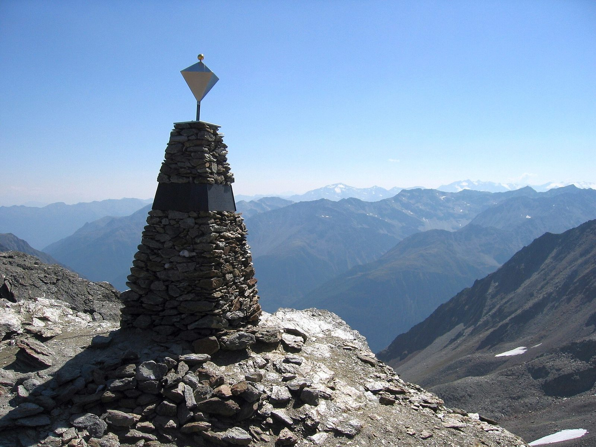
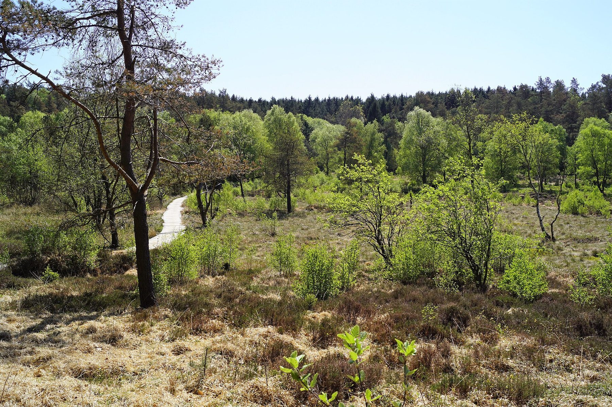
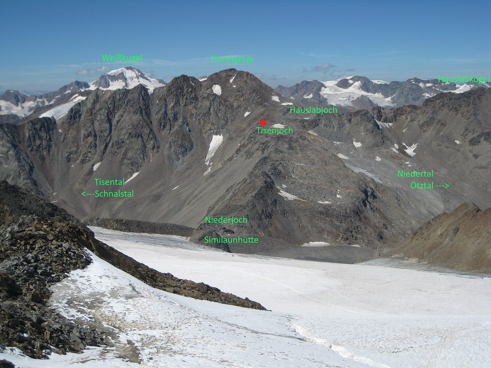
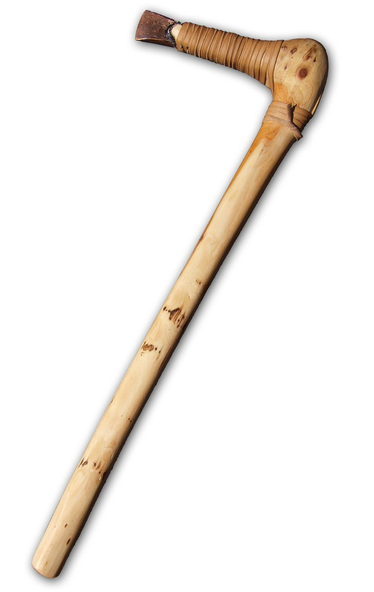
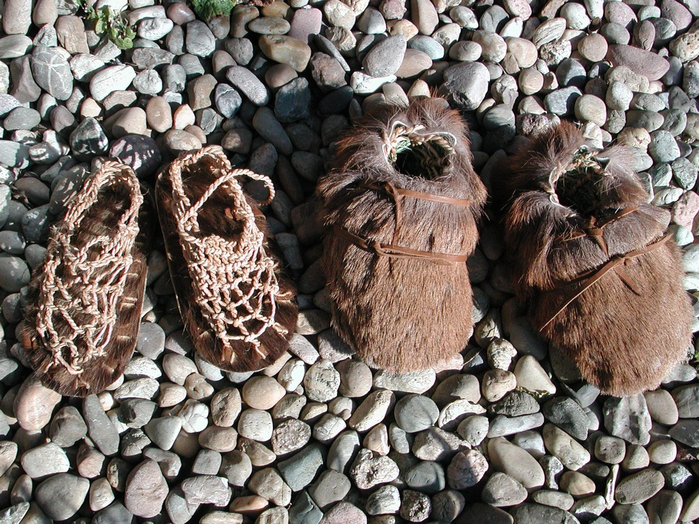
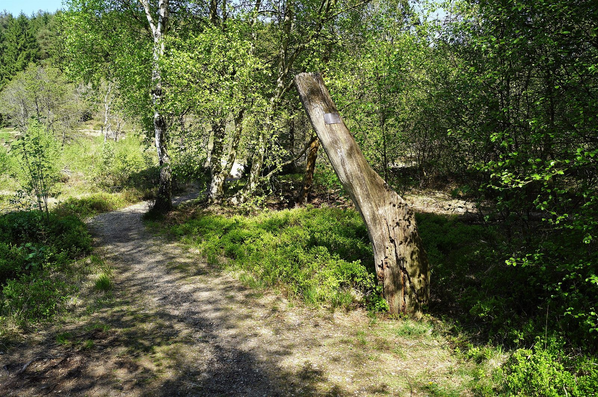
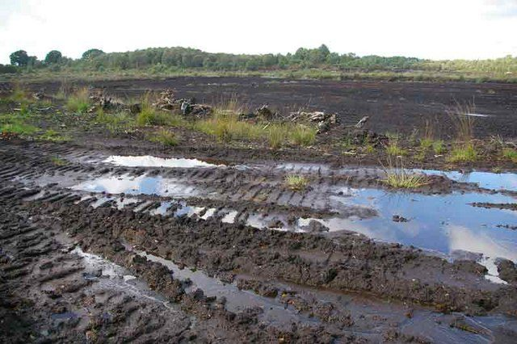

Unit 3 · Human remains · Lesson 2
Preserved by ice and bog: Ötzi and the bog bodies
How did ice and bogs preserve these people, and how did the way they were found and removed change the evidence we have?
Year 11 Ancient History · Present with → or space · Read on a phone with R


Images: Tigerente (CC BY-SA 4.0) · Nils Jepsen (CC BY-SA 4.0). Full details on the last slide.
Connect · 3 minutes · everyone writes one line · press K for the timer
What can a skeleton tell us that a cremation cannot?
Use a precise term and say why: what does burning do to bone?
A skeleton keeps whole bones, so it can show age, sex, health and injuries; cremation breaks, warps and shrinks bone, so much of that evidence is lost or harder to read.
Ancient DNA can sometimes be recovered from a skeleton, but the heat of a cremation usually destroys it; experts can still learn a lot from burnt bone, though far less than from a skeleton.
Today: bodies that kept even more than a skeleton — skin, hair, stomach contents, clothes. What preserved them, and what happened when they were found?
Learning intentions and success criteria · 2 minutes
Today’s goals
- understand how the condition of human remains depends on how they were preserved
- explain how discovery and removal changed the evidence
- explain how ice and bogs preserve bodies differently
- describe how Ötzi and one bog body were discovered and removed
- explain one way removal damaged or changed the evidence
Syllabus outcomes: AH-11-05 analyses different types of sources for evidence to support a historical account or argument · AH-11-06 explains differing interpretations and representations of the past · AH-11-07 communicates historical understanding, applying historical knowledge, terms and concepts. Life Skills: AH-LS-08 uses sources to form conclusions about the past · AH-LS-11 communicates information about the past using historical terms and concepts.
Note-making · the routine for the whole course
How to structure your notes
questions and key terms, written after
short phrases, arrows (→ leads to), abbreviations (c. = about; BCE = Before the Common Era)
- 1Rule up the page firstA cue column about a quarter of the page wide; title and date at the top; room for a summary at the bottom.
- 2Listen and look, then writeDon’t copy while a slide is being explained. Phrases, not sentences.
- 3Write your own notes at each ✎ checkpointThen compare with the model notes, one row at a time. Add what you missed in a second colour.
- 4Write the cue questions afterwardsUse exam verbs: explain, analyse, assess. To revise, cover your notes and answer the cues.
- 5Finish with a three-sentence summaryCheckpoints today: Ötzi and the ice · the three bog bodies (if time, or at home). Your comparison grid and jigsaw grid count as notes too: keep them with this page.
Key vocabulary · add to the unit word wall
Words for how bodies survive, and what happens after
| How bodies survive | Meaning |
|---|---|
| natural preservation | Preservation by the environment, such as ice, bogs or dry desert sand, without human intervention. |
| mummification | Preserving a body’s skin and soft tissue: done deliberately in ancient Egypt, and naturally by ice, bogs or desert. |
| mummified person | A person whose body has been preserved, naturally or deliberately; some museums (e.g. National Museums Scotland) now prefer this to ‘mummy’. |
| bog body | A human body preserved in a peat bog, often with skin and hair intact. |
| peat | Partly decayed plant material that builds up in waterlogged, acidic, oxygen-poor bogs. |
| sphagnum moss | The moss that grows on top of raised bogs; as it dies it builds up peat and releases sphagnan, a substance that stops bacteria and helps tan skin. |
| After discovery | Meaning |
|---|---|
| human remains | The bodies, or parts of the bodies, of people who have died — including bones, preserved tissue and ashes. |
| exhumation | Digging up a body that has been buried. |
| conservation | Treating and storing remains or objects to stop them deteriorating. |
| replica | A copy made to look like an original, sometimes displayed instead of it. |
1 · Ötzi: preserved by ice · I do — the map
Four people, four find-spots
- Ötzi: high in the Alps, on the border of Italy and Austria · found 1991
- Tollund Man and Grauballe Man: two bogs near Silkeborg, Denmark · found 1950 and 1952
- Lindow Man: a bog in Cheshire, England · found 1984
Who found them, and what did the finders first think?
All four were found by chance, by hikers or peat cutters, not archaeologists, and each was at first thought to be a possible recent death: a climber’s accident, a murder, a missing local man. Watch what that did to the evidence.
1 · Ötzi: preserved by ice · I do — think aloud · the discovery
19 September 1991: a body in the ice

- Who: Erika and Helmut Simon, German hikers on holiday
- Where: the Tisenjoch pass in the Ötztal Alps, 3,210 m up, in a rock gully about 3 by 7 metres
- What they saw: only his upper body, sticking out of melting ice after a warm summer
- The border: a survey on 2 October 1991 found the spot was 92.56 m inside Italy
- First thought: a climber who had died in an accident; police from both countries were called
Why does it matter that everyone first thought this was a recent death?
A recent death is a job for police and doctors, not archaeologists. So the body was treated as a corpse to be recovered, not as an archaeological find to be recorded: “There was still no archaeologist present”, the museum says, even on the day he was freed.
1 · Ötzi: preserved by ice · I do — think aloud · the recovery, 20–24 September 1991
A confused recovery: a drill, ice picks and a ski pole
- 20 SepA police officer tries a pneumatic drillThe attempt fails, but it tears his clothing and damages his left hip; the air runs out and bad weather stops the work. Only his axe is taken down the mountain.
- 21–22 SepNo helicopter; visitors arriveThe hut keeper covers the body with plastic; the climber Reinhold Messner suspects it is very old. Over the weekend some visitors take fragments as souvenirs.
- 23 SepFreed with ice picks while a camera filmsNo archaeologist; a forensic scientist sends him by helicopter and hearse to the Institute of Forensic Medicine in Innsbruck.
- 24 SepAn archaeologist sees him at lastKonrad Spindler: “at least 4000 years old”. He has begun to decompose, so he goes into a cold cell like a glacier.
“… damage acquired during the effort to recover the corpse.” W. A. Murphy et al., Radiology (2003), on the X-rays and CT scans of Ötzi
“His clothing was damaged by wind and weather when the ice melted and was also badly affected by the unorthodox way in which his body was recovered.” South Tyrol Museum of Archaeology, “Ötzi’s clothing” · unorthodox = not done the normal, careful way
1 · Ötzi: preserved by ice · I do — what the ice kept, and what people and nature took away
What survived, and what was lost
- his body: “Ötzi is a wet mummy that was mummified naturally in the glacier ice” — skin, organs and bones
- bones with their minerals; soft tissue dried out
- clothing of hide, leather and grass; a bearskin cap (found in 1992)
- a copper axe “preserved intact”, an unfinished yew bow, arrows, a flint dagger, birch-bark containers
- by people in 1991: the left hip and clothing damaged; fragments taken as souvenirs; no archaeologist to record where things lay
- by nature: clothing damaged “by wind and weather when the ice melted”; some objects probably broken by snow and ice
- cause unknown: the coat’s sleeves did not survive (the museum does not say why)
A 2022 study (Pilø et al., The Holocene) looked again at the broken objects. Why does it matter who or what broke them?
Because damage can be misread as evidence. Broken objects were once used to argue that Ötzi had been fighting before he fled; the study argues they were “probably broken by typical postdepositional processes on glacial archaeological sites, and not, as previously claimed, during conflict” (post-depositional = after they were left there). Historians must ask: life, death, the ice, or the people who found him?


Images: A. Franzkowiak (CC BY 3.0) · Anne Reichert (CC BY-SA 4.0). Full details on the last slide.
1 · Ötzi: preserved by ice · I do — fill in the ice column of your comparison grid
How did ice preserve Ötzi?
| Ice: Ötzi | Bog: peat | |
|---|---|---|
| Temperature | glacier cold; once out of the ice, he began to decompose | from your expert card |
| Water | frozen: the body slowly dried out (dehydrated) | … |
| Acid | no bog acid, so the bones kept their minerals | … |
| Oxygen | not sealed off from the air as in a bog: cold and drying, not a lack of oxygen, slowed decay; Pilø et al. (2022, The Holocene) argue the gully was probably exposed again and again | … |
| What survives | skin, organs and bones; clothing and tools of wood, leather, grass, copper and flint | … |
| What is lost | body fluids; some clothing and objects damaged by melting ice and, in 1991, by the recovery | … |
Keep the bog column empty for now: your expert card will fill it.
Notes checkpoint 1 of 2
Ötzi: preserved by ice, found by chance, freed without an archaeologist
2 · The bog bodies · We do — case-card jigsaw · 15 minutes · press K for the timer
Bog-body jigsaw: three people, one grid
- 1Expert groups · 6 minRead your card aloud. Fill in your row of the grid. Decide: how did removal or conservation change the evidence?
- 2Home groups · 6 minOne expert on each body. Teach your case; everyone fills in all three rows.
- 3Whole class · 2 minWhy do bogs keep skin but not always bone?
The highlighted sentences on your card are the key ones. Your grid already has the Tollund Man row filled in.
Sort the picture cards into ‘ice’ and ‘bog’. Say one thing each one preserves.
| Body | Where and when found | Condition | Why preserved | How removed |
|---|---|---|---|---|
| A · Tollund Man | ||||
| B · Grauballe Man | ||||
| C · Lindow Man |
2 · The bog bodies · case card A · expert group A · Museum Silkeborg, Denmark
ATollund Man

Saturday 6 May 1950, Bjældskovdal bog, about 10 km west of Silkeborg. Two brothers, Viggo and Emil Højgaard, and Viggo’s wife Grethe were cutting peat for fuel, 2½ m down. They thought they had found the victim of a recent murder and called the police.
A man of about 30–40 who was hanged, most likely between 405 and 380 BCE (radiocarbon).
Lying as if asleep, his head and face very well preserved, wearing a sheepskin cap and a leather belt, with a leather rope round his neck. The side facing up had begun to decay; his arms and hands were almost skeletonised, partly ruined by the peat digging.
Waterlogged peat; the museum says the acid in the bog “has a tanning effect”.
Lifted in the block of peat he lay in and taken to the National Museum in Copenhagen, where a conservator dug him out and doctors examined him. Only the head (with a foot and a finger) was conserved, in wax; it shrank about 12%. The museum: “Unfortunately the body was not preserved but dried out, leaving hardly more than the bones.” Silkeborg later made a replica body for display.
Which evidence was lost after 1950, not in the bog?
2 · The bog bodies · case card B · expert group B · Moesgaard Museum, Denmark · text only
BGrauballe Man
Saturday 26 April 1952, Nebelgaard Bog, south of the village of Grauballe. A peat cutter, Tage Busk Sørensen, found a tuft of red hair. At first the finder thought it was ‘Red Kristian’, a local man who had disappeared. Professor P. V. Glob of the museum in Aarhus was called.
A man of about 34 whose throat was cut. He lived between 400 and 200 BCE, most likely about 390 BCE (Moesgaard).
A whole body with skin, hair, nails, teeth and face; his hair turned red in the bog; his bones were soft but still there. His skull was flattened and cracked, probably by the weight of the peat, or by one of the crowd who trod on his head the night he was found.
Moesgaard: bogs “are acidic and low in oxygen”, so the microorganisms that break down tissue struggle to survive.
Glob had him carefully dug out to be studied and kept. About 18,000 people queued to see him in Aarhus before the scientists began; mould appeared on his skin. Doctors removed his liver, stomach and intestines; dentists took out his teeth, which were lost for a time and shrank: he is toothless today.
Kept whole, and tanned for 18 months in a bath of oak bark and water: “Grauballe Man is now leather”, said his conservator. UV and infrared images later showed patches of skin filled with painted wax; his broken leg had been neatly repaired.
How do the 1950s repairs affect what scientists can see today?
2 · The bog bodies · case card C · expert group C · British Museum, London
CLindow Man

1 August 1984, Lindow Moss, Cheshire, England. Peat was dug by machine and sent to a mill. A worker, Andy Mould, pulled what he thought was a piece of wood off the mill’s conveyor belt: it was part of a human leg. The police were called.
A man of about 25, who died between 2 BCE and 119 CE (radiocarbon).
Skin, hair and many internal organs well preserved; a trimmed beard. Signs of a violent death: blows to the head, a cord tied round his neck, a cut throat. Part of his body had already gone through the peat machinery: a thigh found nearby may be his missing leg.
The British Museum: “the acidic, oxygen-free conditions slowed down the rate at which the body decayed”.
The county archaeologist, Rick Turner, cut out a block of peat about 3 m by 2 m around the body. Radiocarbon dating took 11 days to show it was not a police matter. At the British Museum the body was kept cool, sprayed with cold water and dug out of the peat slowly; “After extensive testing, freeze-drying was selected.”
What did the machine take that no scientist can get back?
2 · The bog bodies · We do — home groups · 6 minutes · each expert teaches their body
Home groups: complete the grid for all three
| Body | Where and when found | Condition | Why preserved | How removed |
|---|---|---|---|---|
| A · Tollund Man | Bjældskovdal, Denmark, 1950, by peat cutters (thought a recent murder) | head and face very well preserved; cap, belt, rope; arms and hands almost skeletonised, partly ruined by digging | waterlogged, acidic peat (“a tanning effect”) | lifted in a peat block; only the head (with a foot and a finger) conserved; the rest dried out → a replica body |
| B · Grauballe Man | Nebelgaard Bog, Denmark, 1952, by a peat cutter (thought a missing local man) | whole body: skin, hair, nails, face; bones soft; skull flattened (peat, or a visitor’s foot) | acidic, low in oxygen: microorganisms can’t break tissue down | carefully dug out; organs and teeth removed (teeth mislaid, returned too shrunken to replace); tanned whole in oak bark; wax repairs |
| C · Lindow Man | Lindow Moss, England, 1984, on a peat mill’s conveyor (police called) | skin, hair, organs well preserved; part of the body lost to the machinery | “acidic, oxygen-free conditions” | a 3 × 2 m peat block; kept cool, dug out slowly; freeze-dried after testing |
Check your grid: does every “How removed” box say what it did to the evidence?
2 · The bog bodies · whole class · 2 minutes · complete the bog column of your comparison grid
Why do bogs keep skin, but not always bone?
| Bog: peat | |
|---|---|
| Temperature | cold: below about 4 °C when the body went in |
| Water | waterlogged all year |
| Acid | very acidic (pH about 3.3–4.5): acid and sphagnan draw calcium out of bone |
| Oxygen | almost none, so decay slows |
| What survives | skin, hair, nails, organs, stomach contents, leather |
| What is lost | bone softens or dissolves; parts lost to digging and to later choices |
“It binds nitrogen, halting growth of bacteria and further mummifying the corpse. But sphagnan also extracts calcium, leached out of the body’s bones.” Joshua Levine, Smithsonian, May 2017, on sphagnan from dead sphagnum moss
Notes checkpoint 2 of 2 If time · or at home
The bog bodies: preserved by peat, changed by people
3 · You do · check first · cold call · 2 minutes
Before you write: one cause, one effect
Ice and a bog both kept skin. What did each do to the bones?
Ice: the bones kept their minerals while the soft tissue dried out. Bog: acid and sphagnan drew calcium out, so bones can soften or dissolve.
Name one way removal or conservation changed the evidence, and say what was lost.
For example: a pneumatic drill damaged Ötzi’s left hip and clothing; only Tollund Man’s head was conserved, so his body dried out; Grauballe Man’s teeth were taken out, mislaid and returned too shrunken to put back.
Then write: cause (how it was preserved or removed) → condition (what it is like now) → evidence (what we can and cannot learn).
3 · You do · Writing focus · I do 2 · We do 2 · then apply it in the short answer
Writing focus: from cause to evidence in one sentence
A causal chain links cause → process → effect on the evidence with because · so · which meant that. Use the passive when the process matters (the bones were broken); the active when who acted matters (a police officer tried a drill).
Worked example · written for this lesson · one chain about a cremation (today’s Connect)
Cause: Because the body was cremated,
Process (passive): its bones were broken, warped and shrunk by the heat,
Effect: which meant that its age, sex and health are harder for historians to read than a skeleton’s.
Which sentence about a cremation is a causal chain that ends with the evidence? Hold up A, B, C or D.
- ABecause the body was cremated, its bones were broken and shrunk by the heat, which meant that burnt bone can tell historians nothing.
- BBecause the body was cremated, its bones were broken and shrunk by the heat, which meant that its age and sex are harder to read.
- CBecause the body was cremated, its bones were broken and shrunk by the heat, which meant that the heat had broken and shrunk them.
- DBecause the body was cremated, its bones were broken and shrunk by the heat, which meant that a skeleton is always the better find.
A overclaims: experts can still learn a lot from burnt bone. C goes in a circle: its effect repeats the process. D ends on a verdict about finds, not on what historians can or cannot learn.
Make your first link a chain: Because [how it was preserved or removed], [what happened to the body: passive if the process matters], which meant that historians can or cannot …
Then do the same for your second example.
3 · You do · 15 minutes · write in full sentences
Short answer: preserved, removed, and what it means for the evidence
- Explain how the way human remains were preserved and removed affects the evidence they provide.
- Use two named examples: Ötzi and one bog body.
- Link each step: preservation → condition → evidence.
Verb explain: how and why, with the links stated · Topic how preservation and removal affect the evidence · Limits two named examples, Ötzi and one bog body · Do one causal chain per example, ending with what historians can or cannot learn
“Human remains preserved in … keep … because …” · “For example, …” · “However, when … was removed, …, so historians cannot …” · “This shows that …” Use both grids and the vocabulary.
Ötzi was found on the border and claimed by both Austria and Italy. Explain how the place of discovery shaped who owns and cares for him.
Human remains survive only where their environment slows decay, and each environment keeps different evidence. Ötzi was preserved naturally in glacier ice: his body slowly dried out, so his skin, organs and well-mineralised bones survived, together with clothing and tools of hide, leather, grass, wood and copper. Bog bodies such as Tollund Man were preserved by cold, waterlogged, acidic peat with almost no oxygen, which keeps skin and hair but can draw the minerals out of bone. Removal then changed the evidence again. Because Ötzi was first thought to be a climber who had died recently, he was freed without an archaeologist: a pneumatic drill damaged his left hip and clothing, and no archaeologist recorded the site as he was freed. Tollund Man was lifted carefully in a block of peat, but only his head was conserved, so the rest of his body dried out. Historians must therefore ask whether a feature of the remains comes from the person’s life and death, from the ice or bog, or from the people who found and removed them.
Finish your notes If time · or at home
Summary: three sentences
- How do ice and bogs preserve bodies differently?
- How were Ötzi and one bog body found and removed?
- How did removal and conservation change the evidence?
Glacier ice preserved Ötzi by slowly drying out his body, so his bones, skin and equipment survived, while cold, waterlogged, acidic bogs keep skin and hair but can draw the minerals out of bone. Ötzi was found by hikers in 1991 and freed with improvised tools as if he were a recent death, while Tollund Man, found by peat cutters in 1950, was lifted in a block of peat and taken to Copenhagen. These choices changed the evidence: Ötzi’s hip and clothing were damaged, only Tollund Man’s head was conserved, and Grauballe Man’s tanning and repairs are now part of his body.
Check · hinge question · 3 minutes · hold up A, B, C or D on “3, 2, 1”
Why do some bog bodies keep their skin but have soft or missing bones?
- AAcid in the bog draws the minerals out of bone, while the peat’s chemistry preserves the skin.
- BThe peat cutters’ spades break up the bones, while the cold, wet peat preserves the skin.
- CThe bones rot away before the burial, while the bog water later preserves the skin.
- DCold bog water slowly wears the bone away, while frozen layers of peat preserve the skin.
A. Bog water is very acidic: the acid, and the sphagnan from dead moss, draw calcium out of bone, so bones soften or dissolve. Sphagnan also stops bacteria, the lack of oxygen slows decay, and the acid tans the skin. B: digging damaged some bodies, but it cannot soften bones that were never touched. C: a body that rotted before it reached the bog would have lost its skin too (Grauballe Man was probably placed in the bog soon after he died). D: it is the acid, not the cold, that draws the minerals out of bone, and bogs are cold and wet, not frozen solid like a glacier; the ice kept Ötzi’s bones.
Exit ticket · 4 minutes · before you leave
Two sentences
Ice and a bog both preserved skin, but they treated bones differently because …
One way the removal of Ötzi or a bog body changed the evidence is … , so historians …
1 · ice kept the bones’ minerals while the soft tissue dried; a bog’s acid and sphagnan draw calcium out of bone. 2 · a named body, a precise change (Ötzi’s hip damaged by a drill; Tollund Man’s body not conserved; Grauballe Man’s teeth removed and shrunken; part of Lindow Man lost to machinery) and what historians can no longer learn from it.
Then check yourself against today’s three “I can” statements. Next lesson: reading the remains: what scientific analysis can tell us, and at what cost.
Practice and review · 1 of 3 · true, false, justify
True or false? Justify your answer
- 1Ötzi was found by archaeologists searching the Alps. False — two hikers, Erika and Helmut Simon, found him by chance in 1991.
- 2At first, Ötzi and Tollund Man were both thought to be recent deaths. True — a climber’s accident and a recent murder, so the police were called.
- 3Bogs preserve bone better than skin. False — acid and sphagnan draw calcium out of bone; the skin is tanned and kept.
- 4All of Tollund Man’s body was conserved after he was found. False — only his head (with a foot and a finger); the body dried out, and a replica is displayed.
- 5Some damage to these bodies happened after they were found. True — for example Ötzi’s hip (a drill, 1991) and Grauballe Man’s teeth (removed, mislaid, and too shrunken to put back).
- 6The ice took the minerals out of Ötzi’s bones. False — his bones kept their minerals; it was his soft tissue that dried out.
Practice and review · 2 of 3 · writing
Write it as a historian
In two sentences, explain how the way Lindow Man was found changed the evidence.
Lindow Man was found in 1984 only after peat-cutting machinery had dug into the bog, so part of his body went through the machines. Historians can study his well-preserved skin, hair and organs, but whatever the machines destroyed is lost.
Compare how Tollund Man and Grauballe Man were conserved, and what each choice means for the evidence.
Only Tollund Man’s head was conserved, so his face survives but the rest of his body dried out, leaving little soft tissue for later science. Grauballe Man was conserved whole by tanning, so far more of him survives, but the tanning, wax filler and repairs are now part of his body and must be told apart from what happened in the Iron Age.
Ötzi was found on the border and claimed by both Austria and Italy. Explain how the place of discovery shaped who owns and cares for him.
Ötzi lay so close to the border that police from both Austria and Italy were called, and he was taken first to Innsbruck in Austria. A survey on 2 October 1991 then placed the find-spot 92.56 metres inside Italy, along a border drawn in 1922 when deep snow hid the true watershed. Scientists in Innsbruck kept studying him for the time being, but since 1998 he has been kept in Bolzano, in the South Tyrol Museum of Archaeology, which belongs to the province. The exact find-spot therefore decided which country could claim him, where he is displayed and who cares for him.
Here who acted matters. Rewrite in the active voice: “On 20 September 1991 a pneumatic drill was used, and Ötzi’s left hip was damaged.”
On 20 September 1991 a police officer tried to free Ötzi with a pneumatic drill, which damaged his left hip: police, not archaeologists, ran the first attempt.
Practice and review · 3 of 3 · cover your notes and answer from memory
Quick checks
- Explain how ice preserved Ötzi. Below freezing, his body slowly dried out (dehydrated) in a glacier gully, so his skin, organs and bones survived, with tools and clothing.
- Explain how a bog preserves skin. Cold, waterlogged, acidic peat with almost no oxygen slows decay; sphagnan stops bacteria and the acid tans the skin.
- Why are bog bodies’ bones often soft? The acid and sphagnan draw calcium out of the bones, so they soften or dissolve.
- Describe how Ötzi was removed from the ice. Treated as a recent death: a pneumatic-drill attempt on 20 September 1991 failed but damaged his left hip; he was freed with ice picks on 23 September with no archaeologist present.
- Give one way removal or conservation changed a bog body. Tollund Man: only the head was conserved; Grauballe Man: tanned and repaired, teeth removed and shrunken; Lindow Man: part of the body lost to the peat machinery.
- Why does it matter that the finders first thought these were recent deaths? For Ötzi, Tollund Man and Lindow Man the police were called. Ötzi’s recovery was run by police and a forensic scientist, so no archaeologist was there as he was freed: where things lay was not recorded, and he was damaged. The bog bodies were passed to archaeologists sooner.
Sources and credits
Where everything comes from
Ötzi: South Tyrol Museum of Archaeology, Bolzano, “The Discovery”, “The body”, “Ötzi’s clothing”, “The Iceman’s equipment” and “Ötzi The Iceman”; L. Jaroff, “Stone Age Iceman”, Time, 26 October 1992; W. A. Murphy et al., “The Iceman: discovery and imaging”, Radiology 226 (2003), abstract; L. Pilø et al., “Ötzi, 30 years on”, The Holocene 33 (2023), doi:10.1177/09596836221126133 (CC BY-NC 4.0).
Bog bodies: Museum Silkeborg, “Tollund Man and Elling Woman” and its Tollund Man pages (discovery, condition, preservation, latest news); Moesgaard Museum, “The Grauballe Man” and its earlier Grauballe Man pages (Internet Archive, 2020–22); British Museum, Lindow Man, 1984,1002.1, highlight text and “Conserving the Lindow Man” (Internet Archive, 2015).
J. Levine, “Europe’s Famed Bog Bodies Are Starting to Reveal Their Secrets”, Smithsonian, May 2017; D. Sammut and C. Craig, “Bodies in the Bog: The Lindow Mysteries”, Distillations (Science History Institute), 23 July 2019; K. J. Wu, “Archaeologists Find New Way to Determine Sex of Cremated Individuals”, NOVA, 30 January 2019.
Quotations are short extracts for teaching, credited here; the model answers, the completed grids, the summary and the two diagrams were made for this lesson. Map data: Natural Earth (public domain).
Outcomes and content: NSW Education Standards Authority (NESA), Ancient History 11–12 Syllabus (2024). © NESA.
Teacher resource: Bog Bodies of Northern Europe worksheet and evidence matrix (class notebook).
- The stone pyramid near the Tisenjoch find-spot · Photo: Tigerente · CC BY-SA 4.0 · source
- Bjældskovdal bog, Denmark · Photo: Nils Jepsen · CC BY-SA 4.0 · source
- The Tisenjoch pass in the Ötztal Alps, where Ötzi was found · Photo: Mai-Sachme · CC BY-SA 4.0 · source
- A reconstruction of Ötzi’s copper axe (modern copy) · Photo: Andreas Franzkowiak (Bullenwächter) · CC BY 3.0 · source
- A reconstruction of Ötzi’s shoes (modern copy) · Photo: Anne Reichert · CC BY-SA 4.0 · source
- The Tollund Man find-site, Bjældskovdal · Photo: Nils Jepsen · CC BY-SA 4.0 · source
- Peat workings at Lindow Moss, Cheshire (2006) · Photo: Roger Gittins · CC BY-SA 2.0 · source


All images are public domain or openly licensed, and were resized for the web. Each is shared under the licence shown. By choice, no photographs of the bodies are shown; the axe and shoes are modern reconstructions.